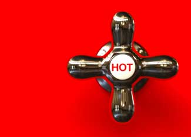

Most water heaters heat 30 to 70 gallons of water and keep it hot until it’s needed. When you open the tap, hot water flows through the pipes and cold water enters the tank to be heated. But when you’re not using hot water, it’s being maintained at 120 degrees Fahrenheit (or more) - all day and all night, increasing your energy bills but not contributing to your comfort. Wouldn’t it be great if you didn’t have to keep a tank of hot water available to use the next time you open the hot water tap? A tankless or on-demand water heater makes it possible.
On-demand water heaters warm water as it’s needed, and they’re different from a standard tank water heater. A water heater with a tank heats water to a set temperature, but as cold water enters the tank, the water temperature gradually drops, and eventually you run out of warm water. Tankless heaters raise the temperature of water based on flow rate, so if you’re using more water (shower and dishwasher at the same time), it won’t be as hot, but the heater keeps producing hot water as long as you need it.
To choose a model that will work for your home, you’ll need to know three things: the temperature of cold water entering your house, the flow rate of hot water you’ll most commonly need, and the temperature of the hot water you want to use.
Suppose the temperature of water entering your house is 50 degrees. If you want to have hot water to take a shower and run the dishwasher at the same time, you’ll want about 5 gallons of hot water per minute. (To estimate hot water use, click here and scroll down to “Typical Flow Rates in Gallons per Minute.”) To get 95 degree water, you’ll need an on-demand heater that can raise the water temperature 45 degrees (95 – 50 = 45) at a flow rate of 5 gallons per minute.
Producing that volume of hot water would take a fairly large on-demand unit. You may need to re-evaluate how and when you use hot water. Or you might consider installing two units, depending on your floor plan. You’ll waste less water waiting for hot water to get to the tap if the heaters are close to where you use the water. Some models are small enough to fit in the cabinet under a bathroom sink.
When determining the temperature of hot water you’ll want, remember that if your current water heater is set to 120 degrees, you probably rarely run straight hot water in a shower or when washing your hands. The tank water has to be hotter than you need because as you use hot water, cold water is added to the tank to be heated. (That’s why a hot shower usually doesn’t turn instantly cold when you run out of hot water, but the water gradually gets cooler.)
Tankless water heaters are an eco-friendly option. BuildingGreen.com rates on-demand water heaters among the most efficient, and the U.S. Department of Energy site states that you can save up to 30 percent of the energy you currently use with a tank heater (depending on a variety of conditions). But the American Council for an Energy-Efficient Economy says to expect only a 10 to 15 percent reduction in water heating energy used.
Although on-demand heaters are more expensive to buy and install, they’re a good investment if you consider fuel costs over time. Accounting for installation cost and energy use, the American Council for an Energy-Efficient Economy determined that total cost for on-demand water heaters is less than for standard water heaters over a 13-year period. And tankless heaters generally have a life expectancy of 20 years, versus 13 years for a tank heater. You can expect to pay $360 to $1,800 (plus installation) for a new on-demand unit.
Water heaters are not rated by Energy Star, but a proposal is under consideration.
If your water heater is 10 or more years old, consider buying a new energy-efficient model before the old one starts leaking. When you’re without hot water, you’ll be less likely to take time to research options and make a wise choice.
To explore options for solar hot water, read Build Your own Passive Solar Water Heater and Go Solar for Free Hot Water.
|
 ISTOCKPHOTO/MARK EVANS Tankless hot water heaters reduce energy use while making hot water available whenever you turn on the tap. |
|
|